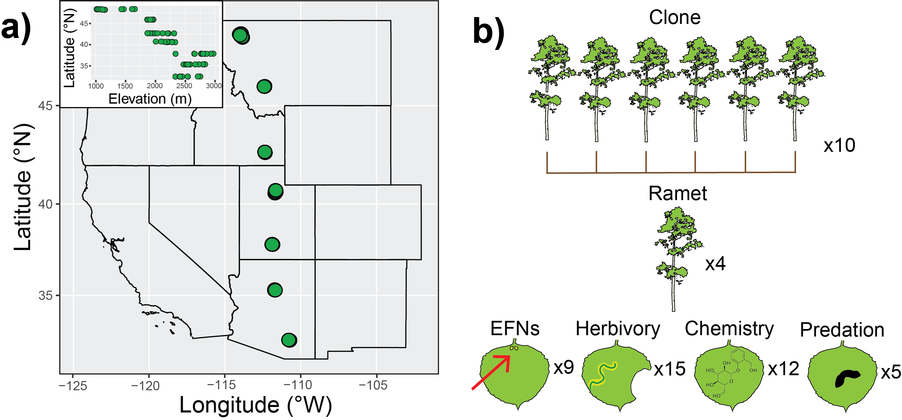
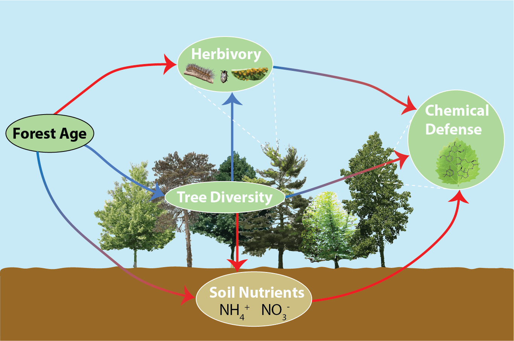
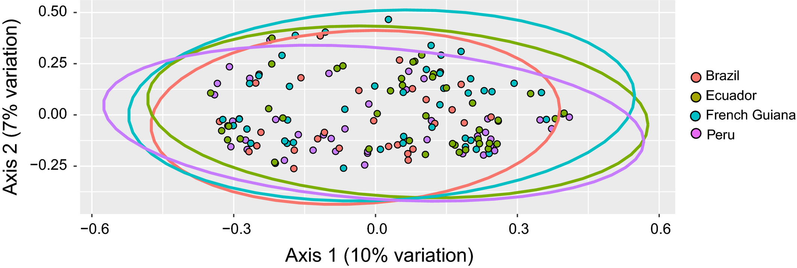
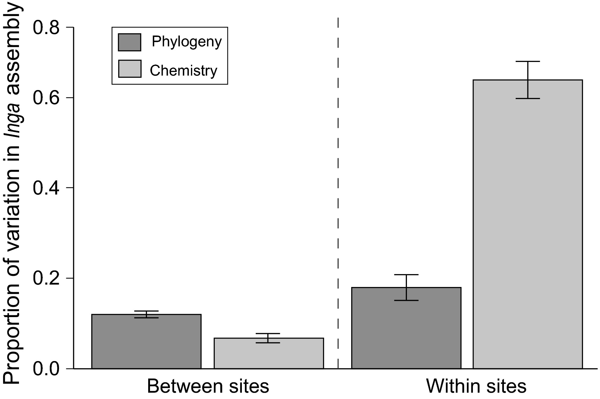

My research program sits at the intersection of species interactions, evolution, and chemical ecology, exploring the causes and consequences of phytochemical defense variation across environmental gradients, phylogeny, and trophic levels.
What explains variation in latitudinal gradients of phytochemical defense investment?

Biologists have long been captivated by the causes and consequences of the latitudinal species diversity gradient. At lower (i.e., more tropical) latitudes, higher diversity and a relatively stable climate are expected to increase the frequency and importance of ecological interactions and, subsequently, investment in traits mediating these interactions. For plants, chemical defense against herbivores and pathogens is among the most important traits for mediating antagonistic ecological interactions, yet empirical evidence for latitudinal gradients in phytochemical defense remains mixed. My work investigates possible causes of this empirical inconsistency using field work and research synthesis approaches.
Relevant publications
Soule, Lindroth, & Weber 2026. Ecosphere.Soule, Zhang, & Weber in prep. (draft available upon request)
How does phytochemical defense change as a forest ages?

Time is a critical dimension of phytochemical defense variation, but theory offers mixed predictions for how defense investment should shift temporally across scales. Within plants, growth-defense theory predicts younger plants should invest less in defense as they prioritize growth, while optimal defense theory predicts phenological shifts in defense allocation across tissues and life stages. At the community scale, longer-term temporal gradients may also shape defenses through altered soil resources, species composition, and herbivore communities. My research examines the mechanisms underlying temporal variation in phytochemical defense at the forest community scale and whether empirical patterns support theoretical predictions.
Relevant publications
Forthcoming
When do closely related species differ in their chemical defense phenotypes?


Divergent phytochemical defense profiles are predicted to promote species coexistence, particularly in the tropics where closely-related species often grow in close proximity to one another and share herbivore communities. However, effective defense phenotypes can also persist across lineages, resulting in high phytochemical similarity between closely-related species. I use integrative analytical chemistry to explore these contrasting phylogenetic predictions of phytochemical defense investment across species in both tropical and temperate forest communities.
Relevant publications
Glos, Soule (co-first author), et al. 2023. Symbiosis. Forrister, Endara, Soule, et al. 2023. New Phytologist. Endara, Soule, et al. 2021. Journal of Ecology. Coley, Endara, ..., Soule, et al. 2019. Journal of Ecology.Project title three
Describe this project.